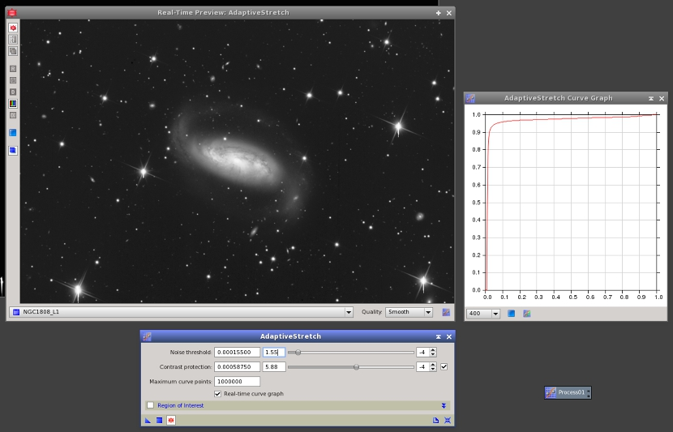
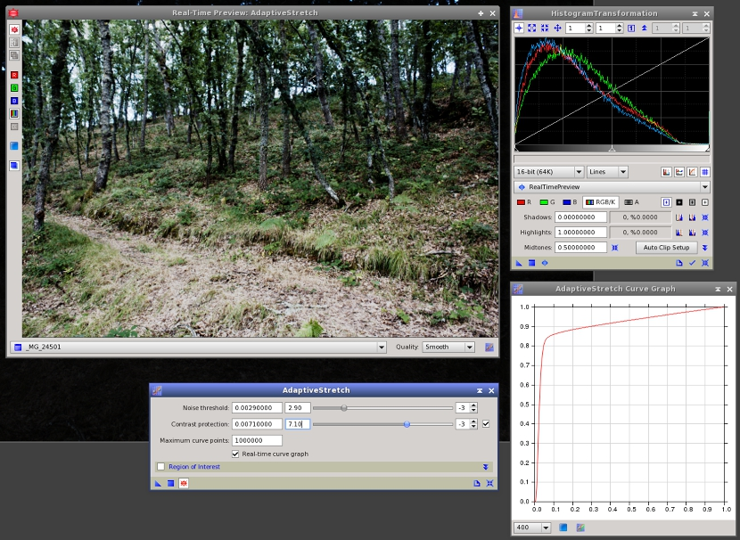

Adaptive nonlinear intensity transformation based on existing pixel-to-pixel relations. [more]
Categories: IntensityTransformations
Keywords: adaptive nonlinear intensity transformation, contrast manipulation
[hide]
[hide]
AdaptiveStretch is a general contrast and brightness manipulation tool in PixInsight. It implements a nonlinear intensity transformation computed from existing pairwise pixel relations in the target image. The process is mainly controlled through a single noise threshold parameter. Basically, brightness differences below the noise threshold are regarded as due to the noise and other spurious variations, and are thus attenuated or not enhanced. Brightness differences above the noise threshold are interpreted as significant changes in the image, so the process tends to enhance them.
Our implementation is based on the algorithm described by Maria and Costas Petrou. [1] All brightness differences between adjacent pairs of pixels are first computed and classified to form two disjoint sets: positive forces, due to significant variations, and negative forces, or variations due to the noise. Positive forces tend to increase the contrast of the image, while negative forces act in the opposite direction, protecting the image. The process uses these two forces to compute a nonlinear mapping curve, which is then used to transform the image by interpolation.
The following list summarizes the main features and advantages of the AdaptiveStretch tool:
The two main tools for nonlinear intensity transformations in PixInsight are HistogramTransformation and CurvesTransformation. With AdaptiveStretch we don't intend to replace those fundamental tools, but to provide an alternative way to perform brightness/contrast manipulations, including the initial nonlinear stretching step of raw data. The most interesting feature of AdaptiveStretch is that it works by analyzing the true contents of the image. Other tools require purely manual work, and hence their results depend more on the knowledge and ability of the user to understand the image. Understanding subtle relations between different image structures can be difficult, and in this sense AdaptiveStretch can be seen as a powerful tool for objective analysys.
[hide]
The AdaptiveStretch process computes a nonlinear curve to enhance existing brightness differences above the noise threshold parameter. Brightness differences smaller than the noise threshold will be diminished or not enhanced in the processed image. Decrease this parameter to apply a more aggressive nonlinear transformation. In general, you should fine tune this parameter along with contrast protection to find an optimal combination.
Figure 1
A comparison of different results obtained by varying the noise threshold parameter of AdaptiveStretch. The original image is a 16-bit raw DSLR image taken with a Canon EOS 450D camera.
(a) Top left: De-Bayered linear image.
(b) Top right: Noise threshold = 1×10-2
(c) Bottom left: Noise threshold = 3×10-3
(d) Bottom right: Noise threshold = 5×10-4
The contrast protection parameter limits the increase of contrast on very bright and dark areas. Increasing this parameter can help control excessive intensification of highlights and darkening of shadows. Irrespective of its value, this parameter can be disabled or enabled; it is disabled by default. This feature allows for quick comparisons between the results with and without contrast protection applied.
Figure 2
An example of use of the contrast protection parameter of AdaptiveStretch. As in the preceding example, the original is a 16-bit raw image shot with a Canon EOS 450D camera.
(a) Top left: De-Bayered linear image.
(b) Top right: Noise threshold = 1×10-3, no contrast protection.
(c) Bottom left: Noise threshold = 5×10-3, no contrast protection.
(d) Bottom right: Noise threshold = 1×10-4, contrast protection = 8×10-2
This is the maximum number of points computed to build the transformation curve. The default value is 106 points. For 8-bit and 16-bit integer images, AdaptiveStretch can compute a maximum of 256 and 65536 curve points. Note that in these cases computing more curve points would make no sense because the minimum possible nonzero difference between two pixels is one discrete unit. For 32-bit integer images the theoretical limit is 232 curve points, which is impractical for obvious reasons.
For 32-bit and 64-bit floating point images a maximum of 107 and 108 curve points can be calculated, respectively. Note that lowering the number of curve points can limit the ability of the algorithm to detect very small brightness changes between adjacent pixels, which are essential to account for variations due to the noise in the image. In practice, however, the default limit of 106 discrete values is more than sufficient for most 32-bit floating point images. Increasing this parameter can improve the result for very rich floating point and 32-bit integer images, usually resulting from deep HDR compositions. Keep in mind that large curves will increase computation times considerably, so they should only be used when actually required. In most cases, the default value of this parameter is quite appropriate.
By default, the AdaptiveStretch process analyzes pairwise pixel brightness differences on the whole target image. Normally this is the best option if there are no big differences in brightness, or if some big differences can be safely ignored. A typical example is an indoor daylight scene where we decide that it is OK to burn a window completely. However, there are more difficult cases where these simple assumptions are unacceptable, or where they simply don't work. In these cases a region of interest (ROI) can be defined to restrict the analysis to a rectangular region of the image. The ROI is defined by the X and Y pixel coordinates of its upper left corner, and by its width and height in pixels. The process will ignore a ROI with less than 16×16 pixels, or a ROI that lies completely outside the image.
Figure 3
An example of the use of regions of interest (ROI) to control the AdaptiveStretch process. As a whole, this image as quite flat, or in other words, it is dominated by an overwhelmingly large amount of pixels with intermediate values. This is more evident on the result of a histogram transformation shown in section (b). Using the whole image to analyze pairwise pixel differences yields a too contrasted result (c), where the dimmest areas are too dark and the brightest regions are too flat. This happens because the AdaptiveStretch algorithm computes a transformation to optimize contrast for a dominant subset of the analyzed pixels.
By restricting the analysys to a smaller area, where bright and dark structures are equally well sampled, and intermediate pixel values are no longer dominant, the result (d) allows us to show much better the entire range of structures in the image. This is a nice example of complex image dynamics. Note however that the result achieved in section (c) can be improved using HDR compression techniques in PixInsight, for example with the HDRMultiscaleTransform tool, which opens a completely different path for processing. Image courtesy of Ivette Rodríguez and Oriol Lehmkuhl.
(a) Top left: The linear image with an automatic screen stretch (STF) applied (note that the automatic STF transformation clips pixels at the shadows).
(b) Top right: Result achieved with the HistogramTransformation tool by clipping unused histogram sections at both ends and applying a midtones balance value of 0.005.
(c) Bottom left: Result of AdaptiveStretch, noise threshold = 10-4, curve computed for the whole image (no region of interest).
(d) Bottom right: Result of AdaptiveStretch, noise threshold = 1.2×10-4, region of interest set to the green rectangle shown on (a).
Figure 4
Another example of AdaptiveStretch with a region of interest (ROI). In this example, a ROI covering the main subject has been used to prevent the excessive contrast increase in the processed image. The relative lack of color saturation can be easily compensated with a color saturation curve.
(a) Top left: The linear image. This is a de-Bayered raw DSLR image acquired with a Canon 450D camera.
(b) Top right: Result of AdaptiveStretch with noise threshold = 8.7×10-4 and contrast protection = 0.355, no ROI.
(c) Bottom left: Result of AdaptiveStretch, noise threshold = 6.7×10-4, contrast protection = 0.375, ROI set to the green rectangle shown on (a).
(d) Bottom right: The result of (c) after a color saturation curve applied with CurvesTransformation.
[hide]
The noise threshold and contrast protection parameters of AdaptiveStretch are extremely sensitive. They can vary in the range from zero to one with eight digits of fractional precision. This extended precision is necessary to process 32-bit floating point and integer images. For 16-bit integer images, usually 4 or 5 decimal digits are required. As a result, the usual edit and slider combined controls that are ubiquitous in the PixInsight platform, are just too rough to control these parameters.
For these parameters we have implemented a specialized control with three subcontrols: an edit field to enter the parameter value with 8 decimal digits; an edit/slider combo to specify the coefficient in scientific notation, with 2 decimal digts in the range from 1 to 9.99; and a spin box to specify the exponent in the 0 to -8 range.
For example, in the figure above, the value of the noise threshold parameter is 0.000275, which is equivalent to 2.75×10-4 in scientific notation. By increasing and decreasing the exponent by one unit, you can quickly change the scale of the parameter by one order of magnitude. By moving the slider, you can fine tune the coefficient. This allows you to control a sensitive parameter very easily with the mouse without needing to write numeric values.
Despite being a rather automatic process, AdaptiveStretch is a highly interactive tool. In fact, you actually cannot apply this tool properly unless you fine tune its two main parameters during a real-time preview session. The reason for this is that this is an adaptive tool: it computes a transformation based on the existing brightness differences between adjacent pairs of pixels in the target image. Of course, you can also adjust AdaptiveStretch parameters using standard previews in PixInsight, which allows you to achieve very accurate results, but the real-time preview is just more convenient and easy to use. Once you have found good parameters with the real-time preview, nothing stops you to refine them using standard previews, if necessary.
Figure 5
Working with the AdaptiveStretch tool in real-time preview mode on a raw CCD image of NGC 1808. Image courtesy of jack Harvey / SSRO.
Figure 6
The RealTimePreview virtual view can be used to inspect the histogram of the transformed image on the HistogramTransformation tool during an AdaptiveStretch real-time session. The histogram and the curve graph provide you with a wealth of information to control the final image.
One of the most useful features of AdaptiveStretch is its ability to generate a real-time curve graph. This graph represents the transformation curve being computed as a function of the current process parameters. The graph is drawn on an auxiliary window when the tool is working in real-time preview mode, if the real-time curve graph check box is checked.
The curve graph allows you to fully evaluate and understand the transformation being applied, while you can see the result on the real-time preview window, and even its histogram on the HistogramTransformation tool with the RealTimePreview virtual view selected (an example of this is shown on the figure above). Two buttons on the AdaptiveStretch Curve Graph window allow you to render the graph as a new image window (as an 8-bit RGB color image) and to convert the current AdaptiveStretch curve into a CurvesTransformation instance. This is useful to apply the same transformation curve to a set of images. Since the AdaptiveStretch process depends on the contents of the image being processed, each running instance applies a different transformation to each particular image; however, CurvesTransformation is not an adaptive process and hence does not have this limitation.
[1] Maria Petrou and Costas Petrou, Image Processing: The Fundamentals, Second Edition, John Wiley and Sons Ltd., 2010, pp. 377–382.
Copyright © 2012 Pleiades Astrophoto. All Rights Reserved.